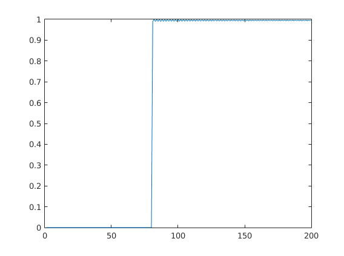
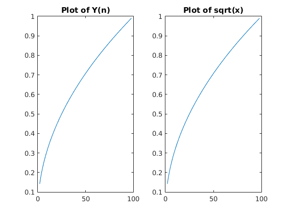

Contents
clear;clc;
Theory
The given function is not a Linear function. The reason is because the system is not homogenous in nature due to the square term. The given function is Time invariant as we achieve the same results by y(t) -> y(t+delta) and x(t) -> x(t+delta) Hence, the function is not linear but time invariant in nature.
Calculation of Square Root of a Number
% Initialize u, calc_sqrt, act_root, and x-axis u = zeros(1,200); calc_sqrt = zeros(1,100); act_root = zeros(1,100); xax = zeros(1,100); % Make u the Step Function with n = 80 for i=1:200 if i>80 u(i)=1; end end
Calculate Square Roots
% Run it for alpha ranging frm 0-1 in steps of 0.01, and plot it. figure; for j = 0.01:0.01:0.99 alpha = j; x = alpha.*u; y = zeros(1,200); for i=2:200 y(i)=x(i)-(y(i-1)*y(i-1))+y(i-1); end plot(y); axis([0 200 0 1]); pause(0.1) %disp(uint8(100*j)); calc_sqrt(1,uint8(j*100)) = y(200); act_root(1,uint8(j*100)) = sqrt(j); xax(1,uint8(j*100)) = uint16(j*100); end % Draw figure of our calc_sqrt besides actual_sqrt figure; axis([0 100 0 1]); subplot(1,2,1); plot(xax(1,2:98),calc_sqrt(1,2:98)); title('Plot of Y(n)'); subplot(1,2,2); plot(xax(1,2:98),act_root(1,2:98)); title('Plot of sqrt(x)'); pause(1); str = 'Hence, n -> inf, Y(n) -> sqrt(x)'; disp(str);
Hence, n -> inf, Y(n) -> sqrt(x) 